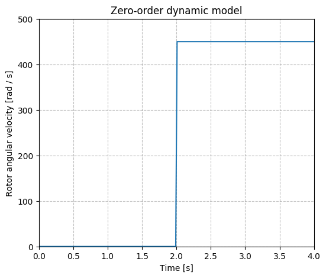
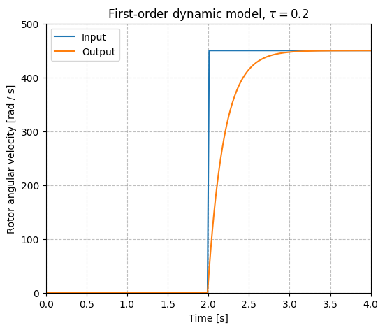
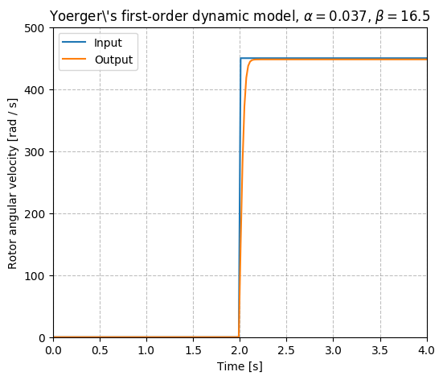
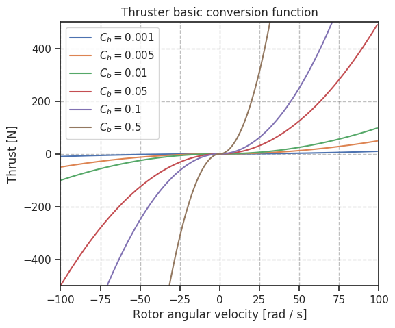
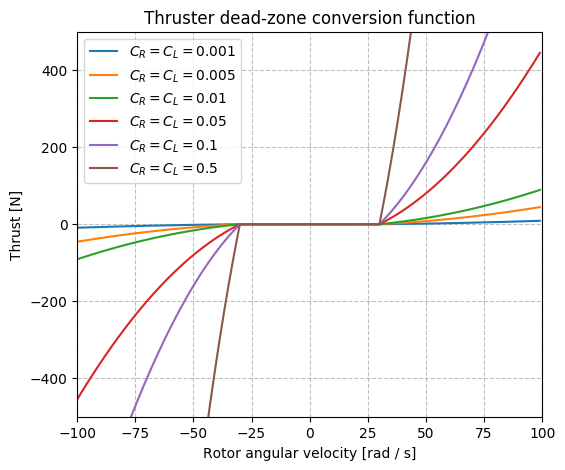

Actuators
Thrusters¶
The thruster units are composed of two modules: the dynamic model describing the dynamics of the thruster's rotor and the conversion function, that describes the steady-state relationship between the rotor's angular velocity and the thrust force output.
URDF snippet
An example of the thruster unit xacro macro can be seen below, including a the thruster link, joint and the Gazebo plugin that includes the dynamic model and conversion function descriptions.
To use the snippet below, replace the <dynamics> and <conversion>
blocks by the fitting models described in the following sections.
xacro macros for thruster units, <dynamics> and <conversion> models can also be included in a custom robot description using the thruster_snippets.xacro.
<xacro:macro name="thruster_macro" params="robot_namespace thruster_id *origin prop_mesh_file"> <link name="${robot_namespace}/thruster_${thruster_id}"> <inertial> <mass value="0.001" /> <origin xyz="0 0 0" rpy="0 0 0"/> <inertia ixx="0.000000017" ixy="0.0" ixz="0.0" iyy="0.000000017" iyz="0.0" izz="0.000000017" /> </inertial> <visual> <geometry> <mesh filename="${prop_mesh_file}" scale="1 1 1" /> </geometry> </visual> </link> <!-- Joint between thruster link and vehicle base link --> <joint name="${robot_namespace}/thruster_${thruster_id}_joint" type="continuous"> <xacro:insert_block name="origin" /> <axis xyz="1 0 0" /> <parent link="${robot_namespace}/base_link" /> <child link="${robot_namespace}/thruster_${thruster_id}" /> </joint> <gazebo> <!-- Thruster ROS plugin --> <plugin name="${robot_namespace}_${thruster_id}_thruster_model" filename="libuuv_thruster_ros_plugin.so"> <!-- Name of the thruster link --> <linkName>${robot_namespace}/thruster_${thruster_id}</linkName> <!-- Name of the joint between thruster and vehicle base link --> <jointName>${robot_namespace}/thruster_${thruster_id}_joint</jointName> <!-- Make the thruster aware of its id --> <thrusterID>${thruster_id}</thrusterID> <!-- Gain of the input command signal --> <gain>1</gain> <!-- Maximum allowed input value for the input signal for thruster unit --> <clampMax>0</clampMax> <!-- Minimum allowed value for the input signal for thruster unit --> <clampMin>0</clampMin> <!-- Minimum and maximum thrust force output allowed --> <thrustMin>0</thrustMin> <thrustMax>0</thrustMax> <!-- Value from 0 to 1 to set the efficiency of the output thrust force Default value is 1.0 --> <thrust_efficiency>1</thrust_efficiency> <!-- Value from 0 to 1 to set the efficiency of the propeller as a factor to be multiplied to the current value of the state variable at each iteration. Default value is 1.0 --> <propeller_efficiency>1</propeller_efficiency> <dynamics> <!-- See the descriptions for dynamic models below --> </dynamics> <conversion> <!-- See the descriptions for conversion functions below --> </conversion> </gazebo> <gazebo reference="${robot_namespace}/thruster_${thruster_id}"> <selfCollide>false</selfCollide> </gazebo> </xacro:macro>
Dynamic models¶
zero_order¶
Description

URDF description
<dynamics> <type>ZeroOrder</type> </dynamics>
first_order¶
Description

URDF description
<dynamics> <type>FirstOrder</type> <timeConstant>time_constant</timeConstant> </dynamics>
yoerger¶
Description

URDF description
<dynamics> <type>Yoerger</type> <alpha>alpha</alpha> <beta>beta</beta> </dynamics>
Source
bessa¶
Description
URDF description
<dynamics> <type>Bessa</type> <Jmsp>Jmsp</Jmsp> <Kv1>Kv1</Kv1> <Kv2>Kv2</Kv2> <Kt>Kt</Kt> <Rm>Rm</Rm> </dynamics>
Source
Conversion functions¶
basic¶
Description
The simple steady-state description of the relationship between rotor's angular velocity and thrust force output is a result of a energy physical analysis presented in Yoerger et al., 1990.

URDF description
<conversion> <type>Basic</type> <rotorConstant>c_f</rotorConstant> </conversion>
Source
dead_zone¶
Description
This model sets a dead-zone around \Omega=0. It was published by
Bessa, 2006 and requires

URDF description
<conversion> <type>Bessa</type> <rotorConstantL>rotor_constant_l</rotorConstantL> <rotorConstantR>rotor_constant_r</rotorConstantR> <deltaL>delta_l</deltaL> <deltaR>delta_r</deltaR> </conversion>
Source
linear_interp¶
Description
This model is useful in case the specifications of the thrusters in the vehicle are available and the steady-state curve can be retrieved from it.
URDF description
<conversion> <type>LinearInterp</type> <inputValues>0 1 2 3 (replace the input rotor angular velocity values)</inputValues> <outputValues>0 1 2 3 (replace the output thrust force output)</outputValues> </conversion>
Fins¶
Fin units are built similar to the thrusters, a dynamic model to describe the fin's revolute joint's state and a lift and drag model that models the lift and drag forces generated at the fin's surface taking into account the fin's relative velocity with respect to the current velocity.
URDF snippet
xacro macros for thruster units, <dynamics> and <liftdrag> models can also be included in a custom robot description using the fin_snippets.xacro.
<xacro:macro name="fin_macro" params="namespace parent_link fin_id *origin min_joint_limit max_joint_limit mesh_filename current_velocity_topic"> <joint name="${namespace}/fin${fin_id}_joint" type="revolute"> <limit effort="0" lower="${min_joint_limit}" upper="${max_joint_limit}" velocity="0"/> <xacro:insert_block name="origin"/> <axis xyz="0 0 1"/> <parent link="${parent_link}" /> <child link="${namespace}/fin${fin_id}" /> </joint> <link name="${namespace}/fin${fin_id}"> <xacro:no_inertial /> <visual> <origin xyz="0 0 0" rpy="0 0 0" /> <geometry> <mesh filename="${mesh_filename}" scale="1 1 1"/> </geometry> </visual> </link> <gazebo> <plugin name="${namespace}_fin${fin_id}_model" filename="libuuv_fin_ros_plugin.so"> <dynamics> <!-- See the options for dynamics models in the thruster dynamic model sections above --> </dynamics> <liftdrag> <!-- See the options for lift and drag models in the sections below --> </liftdrag> <current_velocity_topic>${current_velocity_topic}</current_velocity_topic> <fin_id>${fin_id}</fin_id> <link_name>${namespace}/fin${fin_id}</link_name> <joint_name>${namespace}/fin${fin_id}_joint</joint_name> </plugin> </gazebo> </xacro:macro>
Lift and drag models¶
quadratic¶
URDF description
<liftdrag> <type>Quadratic</type> <lift_constant>lift_constant</lift_constant> <drag_constant>drag_constant</drag_constant> </liftdrag>
Source
two_lines¶
Description
This model is based on Gazebo's lift and drag plugin that uses the two lines approximation to compute the lift and drag coefficients that will be later used to compute the lift and drag forces with respect to the fin's frame.
URDF description
<liftdrag> <type>TwoLines</type> <area>fin_cross_section_area</area> <fluid_density>fluid_density</fluid_density> <a0>a0</a0> <alpha_stall>alpha_stall</alpha_stall> <cla>cla</cla> <cla_stall>cla_stall</cla_stall> <cda>cda</cda> <cda_stall>cda_stall</cda_stall> </liftdrag>